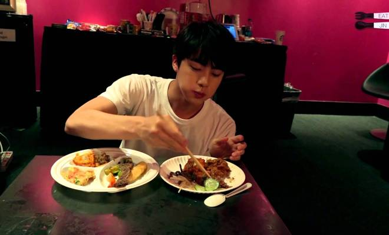
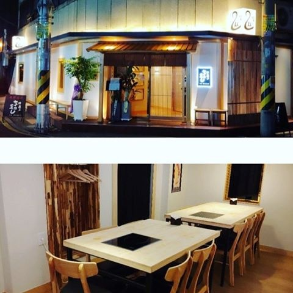
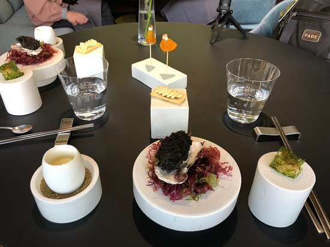
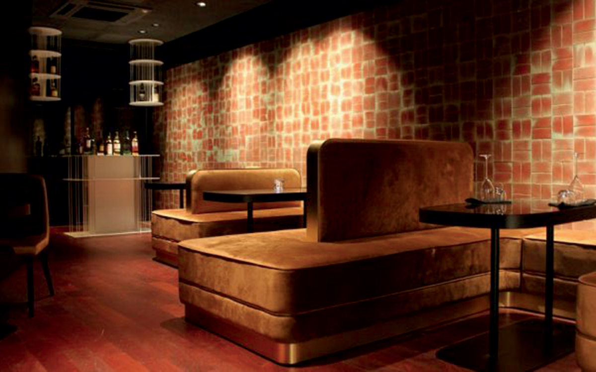
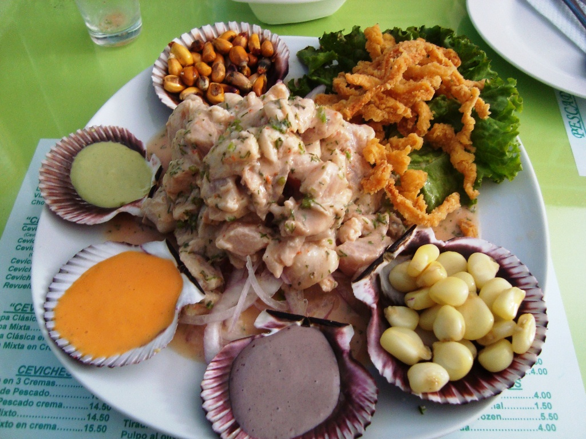
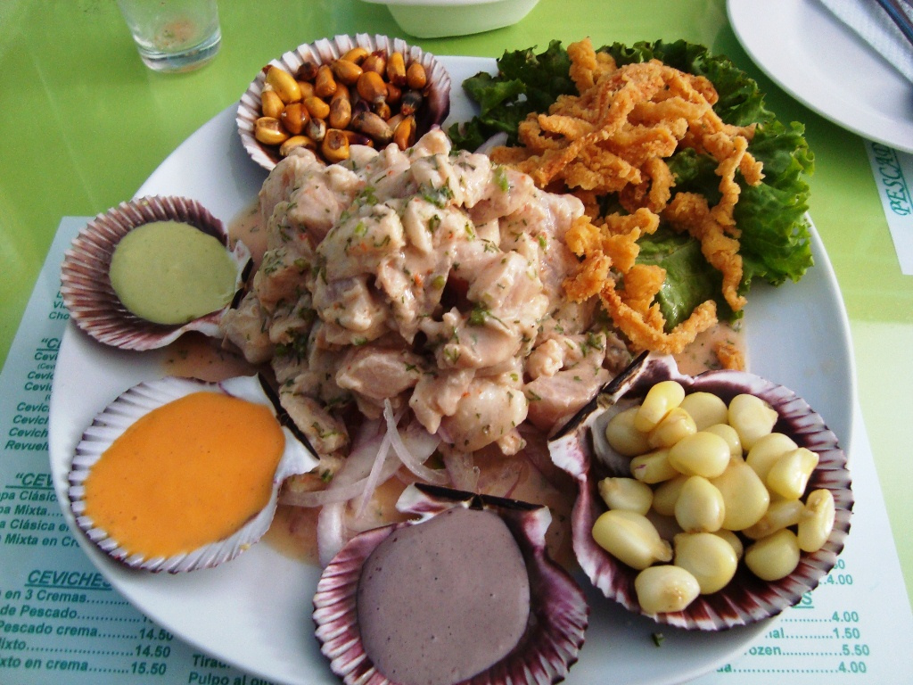

El restaurante está especializado en platos japoneses al vapor . ¡Sirven comida cocinada al estilo seiro-mushi donde la comida se está cocinando en su mesa frente a sus ojos! Primero, el servidor traerá una olla con agua y la colocará en una estufa eléctrica. Una vez que el agua en la olla esté lo suficientemente caliente para humear, el servidor regresará con cajas de comida.
 En un ambiente refinado pero muy elegante, inspirado en los palacios reales, se pueden degustar aquí los platos que se sirvieron a la familia real coreana en los siglos pasados. Durante varias generaciones, la familia Hwang ha perpetuado lo que aprendieron de Han Hui-Sun, antigua cortesana de los reyes Gojong y Sunjon. Refinada y sofisticada, esta cocina es también muy saludable, representando la esencia de la cultura culinaria del país. Le aconsejamos que elija entre los menús fijos, que incluyen una sucesión de platos. Una experiencia real!
 En un ambiente refinado pero muy elegante, inspirado en los palacios reales, se pueden degustar aquí los platos que se sirvieron a la familia real coreana en los siglos pasados. Durante varias generaciones, la familia Hwang ha perpetuado lo que aprendieron de Han Hui-Sun, antigua cortesana de los reyes Gojong y Sunjon. Refinada y sofisticada, esta cocina es también muy saludable, representando la esencia de la cultura culinaria del país. Le aconsejamos que elija entre los menús fijos, que incluyen una sucesión de platos. Una experiencia real!
 
